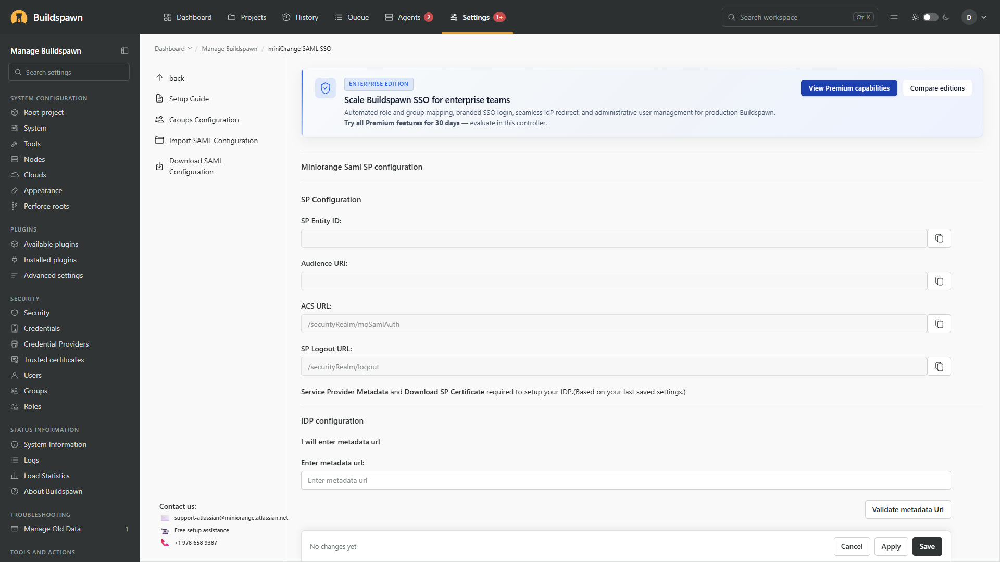

SAML sign-in
Let people sign in through your company’s single sign-on (SSO) with the security realm miniOrange SAML 2.0.
SAML 2.0 is a standard way for a company sign-in system (the identity provider, or IdP, for example Okta, Keycloak or Active Directory Federation Services) to tell another application (the service provider, or SP, which is Buildspawn here) who a person is. Buildspawn never sees the password.
When to use it
Use it when your company has an identity provider that speaks SAML 2.0 and you do not use Entra ID directly. If you use Entra ID, the Entra ID realm is simpler and also gives you groups and a people picker.
How to set it up
- Open Settings › Security. In Security Realm choose miniOrange SAML 2.0. The form only says to click Apply and configure the realm from the SAML page.
- Click Apply.
- Open Settings › miniOrange SAML SSO. The page has SP Configuration at the top and your identity provider settings below.
- Copy the values of SP Entity ID, Audience URI, ACS URL and SP Logout URL into the application you create in your identity provider. You can also use Service Provider Metadata (an XML file) and Download SP Certificate to set up the IdP, if it accepts files.
- In your identity provider, make sure it sends the user name (and, if you want it, the e-mail) in the sign-in answer. Note the names of the attributes it uses.
- Back in Buildspawn, under IDP configuration choose one of three ways: I will enter metadata url, I will enter metadata file path or I will do manual configuration. Fill in the fields (see the table).
- Click Validate metadata Url or Validate metadata File to check them, and the form fills the rest.
- Under User Profile Configuration say which attribute holds the user name and the e-mail.
- Click Test Configuration. A window opens, signs you in at your IdP and shows the attributes it received. Check the user name.
- Make sure the authorization gives Administer to the user name you will get from the IdP. Then click Save.

The server must be reachable by the address in the ACS URL, and your IdP must accept it. If you reach Buildspawn behind a proxy, set the real address in Buildspawn URL on System settings, so that these URLs show the public address.
Every field
SP Configuration (read-only, to copy into the IdP)
| Field | What it is |
|---|---|
| SP Entity ID | The name of Buildspawn as a service provider. It is the base address of the server, for example https://build.studio.example. |
| Audience URI | Same value. The IdP puts it in the answer so Buildspawn knows the answer is meant for it. |
| ACS URL | The address where the IdP sends the sign-in answer: https://build.studio.example/securityRealm/moSamlAuth. |
| SP Logout URL | The address that signs a person out: …/securityRealm/logout. |
| Service Provider Metadata and Download SP Certificate | Links to the SP settings as an XML file and as a certificate, built from your last saved settings. |
IDP configuration
| Field | What it does | Default | Example |
|---|---|---|---|
| Enter metadata url | The address of the IdP’s metadata file. Buildspawn reads the entity ID, sign-in address and certificate from it. Use Validate metadata Url to check it. | Empty | https://idp.studio.example/metadata |
| IDP Metadata | The path of a metadata file on the server, when you downloaded it from the IdP. Use Validate metadata File to check it. | Empty | C:\buildspawn\idp-metadata.xml |
| IDP Entity ID / Issuer | The name the IdP gives itself in the answer. | From metadata | https://idp.studio.example/ |
| Single Sign On URL | The IdP address that Buildspawn sends people to. | From metadata | https://idp.studio.example/sso |
| Single Logout URL | Greyed out in this edition. | — | — |
| Name ID Format | How the IdP names a person: unspecified, emailAddress, persistent or transient. Match what the IdP is set to send. | unspecified | emailAddress |
| IDP Signing Certificate | The certificate the IdP signs its answers with, in text (PEM) form. Buildspawn rejects answers that are not signed with it. Paste only the public certificate. | From metadata | -----BEGIN CERTIFICATE-----… |
| Test Configuration | Opens a test sign-in and shows the attributes that came back, or why it failed. | — | — |
User Profile Configuration
| Field | What it does | Default | Example |
|---|---|---|---|
| Login … account by (the label also holds the name of the server) | Whether people are identified by User Name or by e-mail. Only the user name choice is available in this edition. | User Name | User Name |
| Username Case Conversion | Changes the user name to None, Lowercase or Uppercase. User names are case-sensitive, so this makes the name match the one in your permission grid. Be careful: if the case does not match, a person can lose their rights. | None | Lowercase |
| Username Attribute | The attribute in the answer that holds the user name. If you leave it empty, Buildspawn uses the NameID the IdP sends. | Empty | sAMAccountName |
| Email Attribute | The attribute that holds the e-mail address. If empty, Buildspawn uses the NameID. | Empty | mail |
| Full Name Attribute | Greyed out in this edition. | — | — |
| Apply regex Pattern to the UserName | Cuts the user name with a regular expression before it is used. | Off | On |
| REGEX Pattern | The expression. The first match becomes the user name. For demo@example.com the pattern ^.*?(?=@) gives demo. | Empty | ^.*?(?=@) |
Advanced Configurations
| Field | What it does | Default | Example |
|---|---|---|---|
| SSO Binding Type | How the sign-in request is sent to the IdP: HTTP-Redirect or HTTP-POST. Use what the IdP expects. | HTTP-Redirect | HTTP-Redirect |
| SLO Binding Type | Greyed out in this edition. | — | — |
| Send Signed Request ? | Greyed out in this edition. | Off | — |
| Create new user after SSO? | When on, a person who signs in for the first time gets a user record automatically. If you use the regex, the record uses the name after it. | Off | On |
| Force Authentication | Asks the IdP to make people sign in again, even if they already have a session there. | Off | Off |
| Authentication Context Class | The authentication context the IdP must use. Leave empty if you do not need one. Ask your IdP administrator for the right value. | None | urn:oasis:names:tc:SAML:2.0:ac:classes:PasswordProtectedTransport |
| Update Attributes of Existing Users ? | Greyed out in this edition. | Off | — |
| Custom Attributes | A list of extra attributes to keep with each user. Click Add Custom Attribute, and fill in the two fields in the next table. | None | See below |
| Disable Default Login ?, Enable Custom Login Template, Custom Login Template | Greyed out in this edition. | — | — |
Custom attributes
| Field | What it does | Example |
|---|---|---|
| Attribute Name in SAML Response | The name of the attribute as the IdP sends it. | department |
| Attribute Name in user properties | The label under which the value is shown on the user’s Account page, in the section Saml Custom Attributes. | Department |
Each time the person signs in, the value is stored on their user. It appears in the section Saml Custom Attributes of Account, as label : value, and it is read-only. See User settings.
Buttons at the bottom
| Button | What it does |
|---|---|
| Save | Saves and goes back. |
| Apply | Saves and stays on the page. |
| The upload box | Takes a saved SAML configuration file (JSON) and fills the form. Use it to copy the settings from another server. |
A worked example
Nightlight Games uses Keycloak. The administrator creates a SAML client in Keycloak with the ACS URL https://build.nightlight.example/securityRealm/moSamlAuth. In Buildspawn she pastes the Keycloak metadata address, clicks Validate metadata Url, sets Username Attribute to preferred_username, Email Attribute to email, Username Case Conversion to Lowercase, and ticks Create new user after SSO?. Test Configuration shows dana.k and her e-mail. She makes sure dana.k has Administer and saves.
What you see when it runs
- Visitors who are not signed in see the usual sign-in page. Signing in through SAML sends them to the IdP and back.
- A person who signs in for the first time appears in the user list when Create new user after SSO? is on.
- If the test fails, a page shows the problem and the answer the IdP sent.
Problems and fixes
| Problem | What to do |
|---|---|
| Test Configuration fails with a signature error. | The IDP Signing Certificate is old or wrong. Take the current one from the IdP, or validate the metadata again. |
| The IdP says the ACS URL is not allowed. | The URL in the IdP must be exactly the ACS URL shown here. Check http against https and the host name. |
| Sign-in works but the person has no rights. | The user name from the IdP does not match the name in the grid. Check the case (use Username Case Conversion) and the attribute. |
| A new person cannot sign in. | Tick Create new user after SSO?, or create the user first. |
| You are locked out after saving. | See the recovery steps on Security realms. |